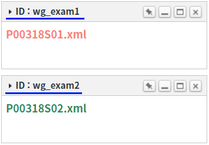

WidgetContainer에 추가된 위젯의 정보를 JSON으로 반환받는 예제입니다.
아래의 WidgetContainer 함수를 통해 구현할 수 있습니다.
exportWidget : 위젯의 ID로 위젯의 정보를 반환합니다.
exportWidgets : 모든 위젯의 정보를 Array로 반환합니다.
위젯의 ID로 위젯의 정보를 반환받기
모든 위젯 정보 반환받기
STEP 1. 초기 상태를 확인합니다.
WidgetContainer에 위젯 'ID : wg_exam1', 'ID : wg_exam2'가 추가되어 있습니다. 테스트를 위해 위젯의 타이틀을 위젯의 ID로 표기하였습니다.
그림 1.브라우저(Chrome) 실행 예시

STEP 2. 위젯의 ID로 위젯의 정보를 반환받습니다.
버튼 위젯의 ID가 'wg_exam2'인 위젯의 정보 반환받기을 클릭합니다.
WidgetContainer에 구성된 위젯 'ID : wg_exam2'가 해당합니다.STEP 3. 실행된 결과를 확인합니다.
반환 값이 화면의 로그 확인 Textarea와 브라우저의 개발자 도구의 콘솔(console)탭에 출력됩니다.
로그
[15:27:08] # 스크립트 wgc_exam1.exportWidget('wg_exam2'); 반환 값:
{
"id": "wg_exam2",
"src": "/page/P00318S02.xml",
"scope": true,
"minimized": false,
"maximized": false,
"x": 0,
"y": 5,
"unitWidth": 1,
"unitHeight": 5,
"fixed": false,
"oriFixed": false,
"title": "ID : wg_exam2",
"className": "w2widget",
"maximizeFormatter": null,
"buttonFormatter": null,
"titleClass": ""
}STEP 1. 초기 상태를 확인합니다.
WidgetContainer에 위젯 'ID : wg_exam1', 'ID : wg_exam2'가 추가되어 있습니다. 테스트를 위해 위젯의 타이틀을 위젯의 ID로 표기하였습니다.
그림 2.브라우저(Chrome) 실행 예시
STEP 2. 위젯의 ID로 위젯의 정보를 반환받습니다.
버튼 모든 위젯 정보 반환받기을 클릭합니다.STEP 3. 실행된 결과를 확인합니다.
반환 값이 화면의 로그 확인 textarea 또는 브라우저의 개발자 도구의 콘솔(console)탭에 출력됩니다.
로그
[15:29:22] # 스크립트 wgc_exam1.exportWidgets(); 반환 값:
[
{
"id": "wg_exam1",
"src": "/page/P00318S01.xml",
"scope": true,
"minimized": false,
"maximized": false,
"x": 0,
"y": 0,
"unitWidth": 1,
"unitHeight": 5,
"fixed": false,
"oriFixed": false,
"title": "ID : wg_exam1",
"className": "w2widget",
"maximizeFormatter": null,
"buttonFormatter": null,
"titleClass": ""
},
{
"id": "wg_exam2",
"src": "/page/P00318S02.xml",
"scope": true,
"minimized": false,
"maximized": false,
"x": 0,
"y": 5,
"unitWidth": 1,
"unitHeight": 5,
"fixed": false,
"oriFixed": false,
"title": "ID : wg_exam2",
"className": "w2widget",
"maximizeFormatter": null,
"buttonFormatter": null,
"titleClass": ""
}
]WidgetContainer의 함수 'exportWidget'를 이용하여 스크립트를 작성합니다. 함수 'exportWidget'의 첫 번째 인자에 위젯의 ID를 할당합니다. 세부 지정은 아래의 스크립트 예시에 작성되어 있습니다.
스크립트
// WidgetContainer 'wgc_exam1'에 추가된 위젯의 ID가 'wg_exam2'인 위젯의 정보를 반환받습니다. let result = wgc_exam1.exportWidget("wg_exam2"); // 반환 값 예시) // { // "id": "wg_exam2", // "src": "/page/P00318S02.xml", // "scope": true, // "minimized": false, // "maximized": false, // "x": 0, // "y": 5, // "unitWidth": 1, // "unitHeight": 5, // "fixed": false, // "oriFixed": false, // "title": "ID : wg_exam2", // "className": "w2widget", // "maximizeFormatter": null, // "buttonFormatter": null, // "titleClass": "" // } // 위젯의 ID는 함수 'addWidgets' 호출 시 옵션 'id'에 할당한 값입니다. // 위젯 추가 시 스크립트 예시 wgc_exam1.addWidgets( { id: "wg_exam2", src: "/page/P00318S02.xml", title: "ID : wg_exam2", x: 0, y: 6, scope: true, unitWidth: 1, unitHeight: 5 } );
WidgetContainer의 함수 'exportWidgets'를 이용하여 스크립트를 작성합니다. 세부 지정은 아래의 스크립트 예시에 작성되어 있습니다.
스크립트
// WidgetContainer 'wgc_exam1'에 추가된 모든 위젯의 정보를 배열로 반환받습니다. let result = wgc_exam1.exportWidgets(); // 반환 값 예시) // [ // { // "id": "wg_exam1", // "src": "/page/P00318S01.xml", // "scope": true, // "minimized": false, // "maximized": false, // "x": 0, // "y": 0, // "unitWidth": 1, // "unitHeight": 5, // "fixed": false, // "oriFixed": false, // "title": "ID : wg_exam1", // "className": "w2widget", // "maximizeFormatter": null, // "buttonFormatter": null, // "titleClass": "" // }, // { // "id": "wg_exam2", // "src": "/page/P00318S02.xml", // "scope": true, // "minimized": false, // "maximized": false, // "x": 0, // "y": 5, // "unitWidth": 1, // "unitHeight": 5, // "fixed": false, // "oriFixed": false, // "title": "ID : wg_exam2", // "className": "w2widget", // "maximizeFormatter": null, // "buttonFormatter": null, // "titleClass": "" // } // ]
exportWidget( widgetId )
exportWidgets( )
[웹스퀘어5 SP5 개발 가이드] WidgetContainer
링크 : https://docs1.inswave.com/sp5_user_guide/2059d4ce88b2fc16#6f01c6c535be09d8